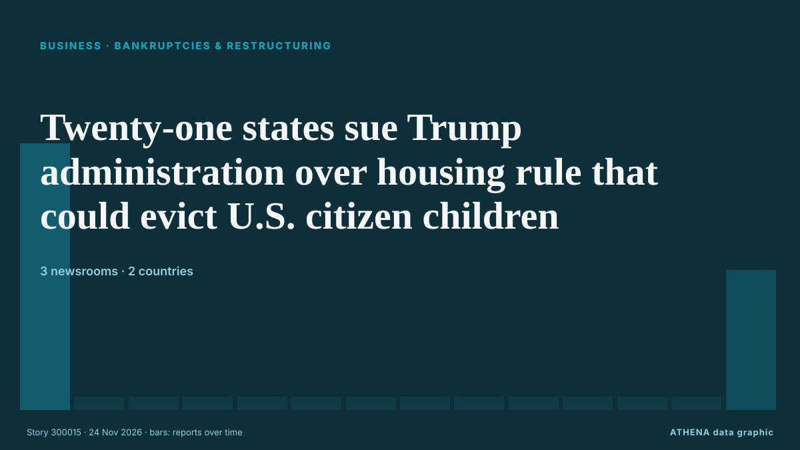

Επιχειρήσεις, Εταιρείες & Επενδύσεις
ΧορηγούμενοΠαρουσιάζεται από  Cybernetics and Artificial Intelligence Lab Welcome to the Cybernetics and Artificial Intelligence Laboratory, established at the Department of Business Administration of the National and Kapodistrian University of Athens. The lab is headed by Professor Dimitrios Thomakos. The lab aims to do research that can be published in top venues. Our research uses tools and methods of Artificial Intelligence, and lies in the following areas: - Forecasting - Decision making - Cyber security - Finance We are always looking forward to collaborating with exceptional students!
Cybernetics and Artificial Intelligence Lab Welcome to the Cybernetics and Artificial Intelligence Laboratory, established at the Department of Business Administration of the National and Kapodistrian University of Athens. The lab is headed by Professor Dimitrios Thomakos. The lab aims to do research that can be published in top venues. Our research uses tools and methods of Artificial Intelligence, and lies in the following areas: - Forecasting - Decision making - Cyber security - Finance We are always looking forward to collaborating with exceptional students!
Οι τίτλοι των ειδήσεων παρουσιάζονται στα αγγλικά, όπως δημοσιεύτηκαν.

Πτωχεύσεις & αναδιαρθρώσειςTwenty-one states sue Trump administration over housing rule that could evict U.S. citizen children
Twenty states and the have sued the U.S. από The Independent
| 11 Νοε | 102 |
|---|---|
| 12 Νοε | 96 |
| 13 Νοε | 63 |
| 14 Νοε | 38 |
| 15 Νοε | 36 |
| 16 Νοε | 99 |
| 17 Νοε | 88 |
| 18 Νοε | 88 |
| 19 Νοε | 84 |
| 20 Νοε | 64 |
| 21 Νοε | 38 |
| 22 Νοε | 33 |
| 23 Νοε | 53 |
| 24 Νοε | 10 |
From “Connection” to “Upgrading and Restructuring”: Huitongda Network Wins 2026 Qianfeng “Deep Value Chain” Award
Media OutReach Newswire – 24 November 2026 – A On November 20, the 8th Ebrun Industrial Internet Annual Conference and the inaugural Industrial AI Agent Conference were held in Beijing. από Laotian Times
18,135 Hotels Join European Lawsuit Against Booking.com
The claim, which includes around 1,000 Greek hotels, seeks compensation for alleged financial losses caused by price-parity clauses between 2004 and 2024. από to vima
De Lima seeks state of calamity declaration over El Niño
A resolution has been filed at the House of Representatives urging President Ferdinand “Bongbong” Marcos Jr. to declare a state of calamity in municipalities… από Daily Tribune
Greek Innovation Takes Centre Stage at Helsinki
Greece presented its growing startup ecosystem at Slush 2026 in Helsinki with a record 180-member delegation seeking international investment and partnerships. από Greek City Times
Tech giants to face billion-dollar fines for breaching Labor’s digital duty of care laws
The fines – for allowing harmful content to fester on social media platforms – are exponentially greater than the original maximum penalties set at $109.2 million per breach. από Sydney Morning Herald
Eni's Vår Energi to acquire ConocoPhillips' assets in Norway and UK for $2.5 bn
(ANSA) - ROME, 23 NOV - The Norwegian oil and gas producer Vår Energi—in which Eni is the majority shareholder—is set to acquire ConocoPhillips' upstream assets in Norway, along with related… από ANSA English
Honda, Toyota Recall 1.6 Million Vehicles Over Takata Airbag Rupture Risk
WASHINGTON: Honda and Toyota Motor said on Friday they are recalling about 1.6 million cars, trucks and SUVs over a risk that Takata airbag inflators could rupture.Honda and Toyota... από Oman Observer
Anne O'Connor to 'vigorously' challenge her 'profoundly flawed' removal as HSE CEO
Ms O'Connor said she is 'deeply surprised and disappointed' by the 'abrupt' manner of the decision. από Irish Examiner
CrowdStrike to acquire Zscaler for $43.9 billion
CrowdStrike has agreed to acquire Zscaler in an all-stock deal with an enterprise value of about $43.9 billion. από Help Net Security
Lufthansa Cargo to acquire Fiege Air Cargo Logistics in Frankfurt
Lufthansa Cargo has signed an agreement to acquire Fiege Air Cargo Logistics (FACL), bringing cargo handling operations at its Frankfurt hub under direct management. από Container News
Costa Concordia Captain Released from Prison After Nine Years
Francesco Schettino, the former captain of the Costa Concordia cruise ship that capsized off Italy in 2012, killing 32 people, has been released from prison after more than nine years... από gCaptain
Lilly buys Huntington's startup LoQus23 for up to $725M
Eli Lilly is headed into Thanksgiving week with an extension to its 2026 shopping bonanza, this time by snapping up a UK-based Huntington's disease biotech set to enter the clinic in the coming… από Endpoints News
FedEx-led consortium completes acquisition of InPost
A consortium comprising Advent International, FedEx, A&R Investments and PPF Group has completed its acquisition of European parcel delivery company InPost. από Container News
Russia's Wildberries CEO Steps Down Days After EU Sanctions, Media Report
Nov 21 - Tatyana Kim, the head of Russia's largest online retailer Wildberries, has stepped down, Russian media reported on Saturday, days after the European Union added her to its Russia sanctions… από The Straits Times
Pakistan, Portugal agree to establish joint ministerial commission to boost bilateral trade, investment
Pakistan and Portugal have agreed to strengthen bilateral cooperation in trade, investment, agriculture, renewable energy, technology and labour mobility, as the two countries seek to expand economic… από Business Recorder
Capita boss steps down after Civil Service pension scheme failures
Capita has announced the departure of its boss as he admitted the company has “not delivered” for members of the UK’s Civil Service pension scheme. από Yorkshire Post
India vs New Zealand 1st Test: Six talking points from Wellington as Bumrah, Rahul and Pant shine
India dominated the first Test against New Zealand in Wellington but settled for a draw. από Sportstar
Uzbekistan rises 31 places in UN E-Government Development Index
Uzbekistan ranked 32nd out of 194 countries in the 2026 UN E-Government Development Index. από Gazeta.uz (English)
‘She was frustrated’: Anupam Kher recalls Deepika Padukone’s maid act in acting class
Dubai: Bollywood star Deepika Padukone was once left frustrated and almost in tears during an acting exercise, veteran actor and former tutor Anupam Kher has recalled. από Gulf News
Shashi Tharoor tries GTA 6 for the first time, says ‘Grand theft, yeah, but auto?’
Shashi Tharoor admitted that neither the setting nor the characters in GTA 6 appealed to him. από Hindustan Times
Calls grow for Japan's education minister to step down over scandals
Calls grew Sunday for education minister Yoshihiro Seki to step down over revelations that senior bureaucrats had given presentations. από Mainichi (English)
CJI Surya Kant recuses himself from hearing plea related to Supertech projects
New Delhi: Chief Justice of India Surya Kant on Monday recused himself from hearing a plea related to Supertech insolvency and homebuyers' dispute, observing that one of the applicants was personally… από Deccan Herald
Kalshi's 30-year-old founder built $40bn giant; now faces US gambling law battle
Luana Lopes Lara, 30, became the world's youngest self-made female billionaire after co-founding Kalshi with Tarek Mansour in 2021. από Times of India (World)
ExxonMobil and partners approve $4bn investment in Angola’s Block 15
ExxonMobil and its partners in Angola's Block 15 have agreed on a final investment decision (FID) valued at approximately $4bn to redevelop the Kizomba A and Kizomba B fields, as well as to develop… από Offshore Technology
Turkey freezes assets of 108 people in fund scandal: report
Prosecutors investigating Turkey's investment fund crisis have frozen the assets of 108 people who each earned over $2 million in profits through trading. από The New Arab
GTA 6 shatters entertainment industry records: The Washington Post
In an unprecedented achievement for the global entertainment industry, The Washington Post reported that Grand Theft Auto 6 – the long-awaited installment of the GTA video game franchise – has… από Egypt Independent
DHL Supply Chain sees 12% year-on-year sustainable revenue growth as companies transform their global supply chains
Asia Pacific records 9.9% year-on-year revenue growth in Q3 2026 and is expected to account for approximately 20% of 2026 Total Contract Value New investments across Australia, India, Japan, the… από Laotian Times
Wonder explores sale of delivery service Grubhub: report
Wonder, started by e-commerce entrepreneur Marc Lore, acquired Grubhub in 2024 for US$150 million. από The Business Times
More than 2,300 Indian Sikh pilgrims arrive in Pakistan to mark Guru Nanak's birthday
LAHORE: Over 2,300 Indian Sikh pilgrims arrived in Pakistan through the Wagah Border on Sunday to attend celebrations marking the 557th birth anniversary of Baba Guru Nanak Dev Ji, the founder of… από Dawn
Health Committee chair condemns 'effort to discredit' CHU chief after she raised staffing concerns
‘We have to create a culture in the health service where clinical leaders feel free to speak up when they see foreseeable patient safety risks,’ said Pádraig Rice. από TheJournal.ie
Defense, AI, High Tech: A Delicate Balance Between Armies and Industry
Defence, AI, high tech: a delicate balance between armies and industry. από Gulf News
World Children’s Day: UNICEF urges greater investment in children
Tehran, IRNA – Iran’s Institute for the Intellectual Development of Children and Young Adults (IIDCYA), better known as Kanoon, has called on the United Nations International Children’s Emergency… από IRNA (English)
Greek Gas Reserves Could Deliver Greater Prosperity for Citizens
Greece’s commercially viable hydrocarbon reserves could improve living standards and strengthen energy security as global companies join offshore exploration. από Greek City Times